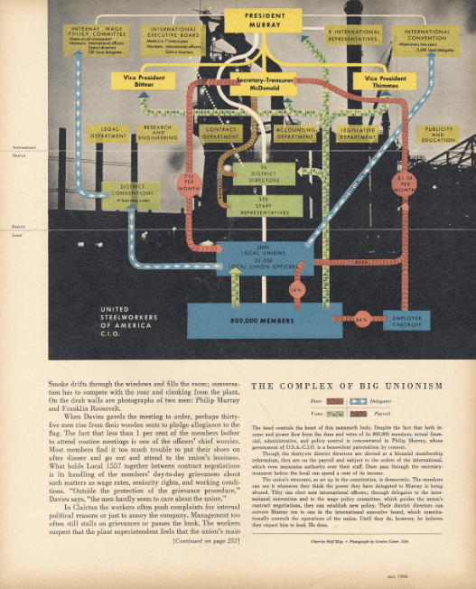
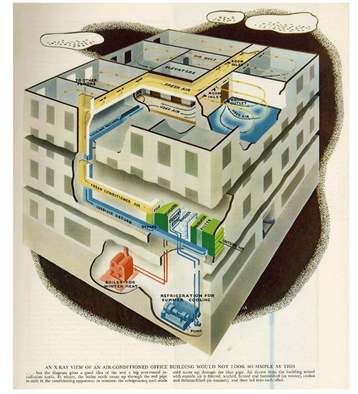
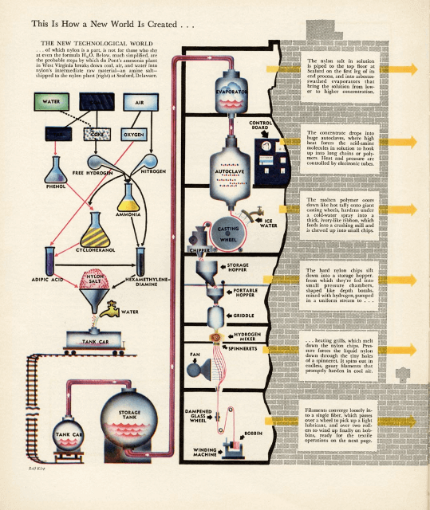
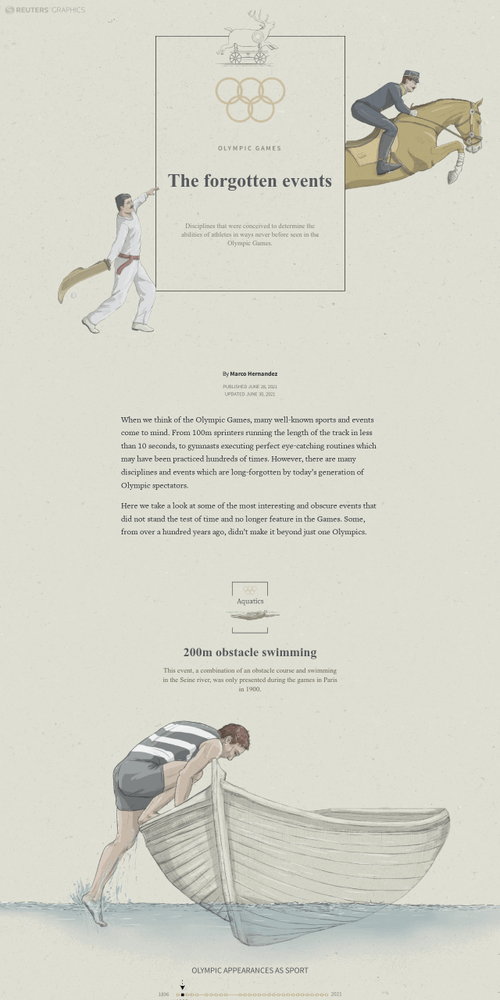
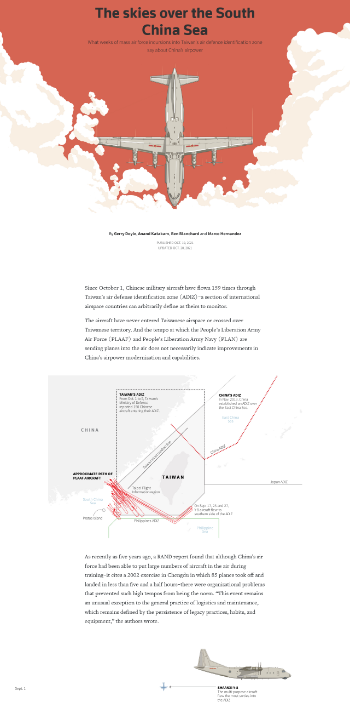
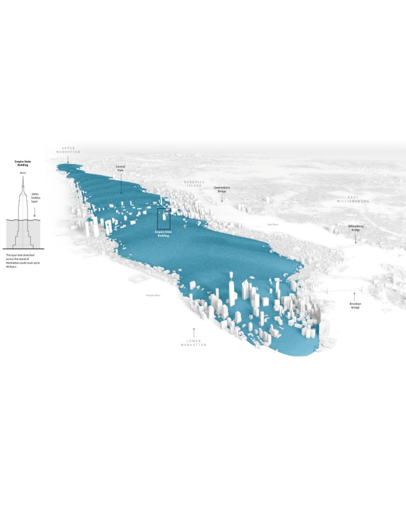
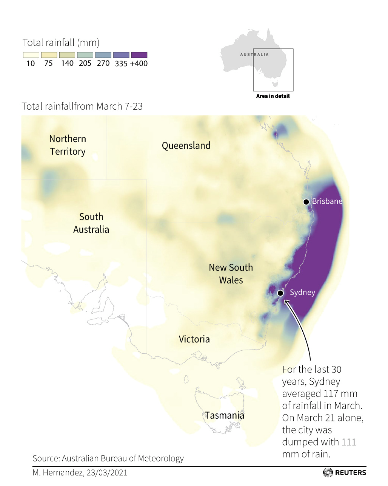

La infografía, al igual que todo en el mundo, evoluciona y se adapta a las nuevas tecnologías y medios que van surgiendo con el paso del tiempo. Así mismo pasa con los especialistas en crearlas, de esta manera conocemos a los "transformers" del pasado, especialistas en ilustrar o pedagogos visuales y a los infografistas del presente, profesionales en las nuevas tecnologías y como manejarlas.
RALF KLEP (1904 - 1981)
Rolf fue un artista e ilustrador norteamericano, cuyo trabajo cubrió una gran cantidad de temas, de los mas importantes siendo el viaje al espacio y la exploración marítima. Lo que en la década de los 50, lo llevó a estar a cargo de la producción gráfica y artística de la oficina naval.

Esquema sobre el unionismo. Revista Fortune Illustration.

Vista en rayos X de un aire acondicionado. Revista Fortune Illustration.
Anatomía de un avión bomba. Revista Fortune Illustration.

Creación de un nuevo mundo. Revista Fortune Illustration.
MARCO HERNANDEZ
Marco Hernandez es un infografista contemporáneo. Nació en Costa Rica y actualmente se desempeña en la ciudad de New York, trabajando para el reconocido New York Times. Ha trabajado en paises asiáticos y también ha dado clases en distintas universidades de Costa Rica y Hong Kong.

Infografía sobre deportes ólimpicos que ya no forman parte de la competencia..

Infografía acerca de los aviones Chinos que sobrevuelan Taiwan.

Imagen de un "fail" de Marco. Una infografía que no llegó al producto final.

Gráfico infográfico de la meteorología en el sur de Australia.